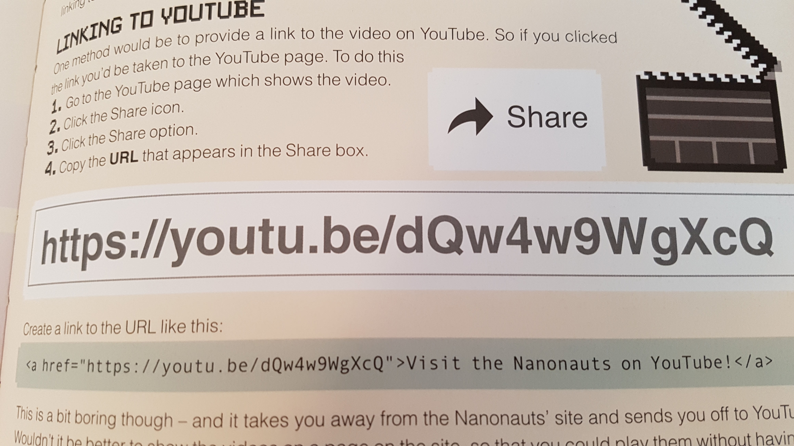

EMBRACE THE POWER!
just technology-related stuff.
this is written in DOS/Batch (Windows only). save it as "(insert name here).bat".
@echo off
title BAT Clock
:clock
cls
echo %date%
echo %time%
goto clock
so, a few months ago, i built this website.
i did it mostly as an experiment, but also as a replacement for my old site, and man, was it an improvement!
When i was making the old site, i followed a kids' coding book. it told me, for SOME STUPID REASON,
to use THISTLE as a background color, AND, use a ROUNDED BOX to put all the content, which barely took up any space.
i also made so many mistakes in it, and never fixed them. honestly, it looks like a 90's website. well, without the
crazy gifs and lack of custom fonts, also, not a 90's looking site, but it uses terrible colors.
i also decided to use 000Webhost for it. even if it is free, it had a MASSIVE security breach.
though it happened in 2015, 2 years before i made it in 2017, it was still a major security risk, and that is the main reason why i didn't use it for my new site. also, it was crappy, anyway.
so i'm not fully sure about the background, but i think either
1. I wanted to redo my website, and make it completely different, or
2. i was bored.
Anyway, i started development around August 10-12. i got a book about HTML5 from the library (in which i didn't use), and
i decided to make it from scratch. i mostly got help by looking online, specifically W3Schools,
and in 0-2 days, i had already made pretty good progress.
anyway, after a bit more editing, trying to find a webhost (i ended up settling on Github Pages),
a bit of a break, and some finishing touches, on August 22, the new site went online.
so after the launch, then adding a few updates, one and a half months later, we are here.
i have deleted the old site, and if you attempt to visit it, you will end up with a "Site Deleted" message.
but honestly, i don't care. i am much more proud of this website, coded entirely from scratch and not from a handbook.
seriously, though, the rickroll reference was kinda funny.
